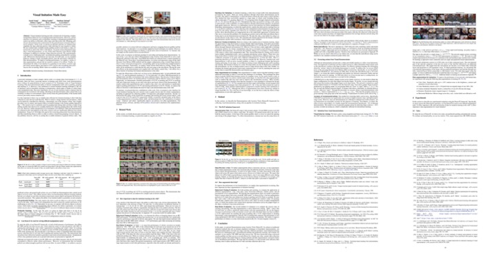

Visual Imitation Made Easy
Visual imitation learning provides a framework for learning complex manipulation behaviors by leveraging human demonstrations. However, current interfaces for imitation such as kinesthetic teaching or virtual reality based control prohibitively restricts our ability to collect large-scale data in the wild. Obtaining such diverse demonstration data is paramount for the generalization of learned skills to novel, previously unseen scenarios. In this work, we present an alternate interface for imitation that simplifies the data collection process, while allowing for easy transfer to robots. We re-purpose commercially available reacher-grabber assistive tools with a mounted camera to collect visual demonstrations. On the robot's end, we attach a similar tool albeit with an actuator mechanism to control the fingers. To extract action information from the collected visual demonstrations, we use off-the-shelf Structure from Motion (SfM) techniques, while to extract grasping actions, we train a finger detection network on a small hand-labelled dataset. We experimentally evaluate on two challenging tasks: non-prehensile pushing and prehensile stacking, with 1000 diverse demonstrations for each task. For both tasks, we use standard visual behavior cloning to learn executable policies from the previously collected offline demonstrations. To improve learning performance, we employ a variety of data augmentations and provide an extensive analysis of its effect. On real robotic scenarios with previous unseen objects, our robot achieves a 92% success rate on pushing, and a 62% success rate on stacking, which demonstrates the utility of our interface for learning difficult manipulation skills.
Tool Used to collect data
We used commercially available Reacher-Grabber and attached GoPro camera to it using 3D printed mount
Here are some examples of demonstration that can be collected using it
Replication of same tool on robot
We attached the Reacher-Grabber using 3D printed mount to the robot and actuate it using dynamixel motor
Task 1: Pushing
Collected ~1000 demonstration data
Execution on real robot
Policy view for pushing
Task 2: Stacking
Collected demonstrations data
Execution on real robot
Policy view for stacking
Robust to external disturbance
Our closed-loop policies also work with human disturbances
Paper and Bibtex
|

[Paper]
[ArXiv]
|
|
Citation
Sarah Young, Dhiraj Gandhi, Shubham Tulsiani, Abhinav Gupta, Pieter Abeele, Lerrel Pinto.
Visual Imitation Made Easy
[Bibtex]
|
|
|
|
@misc{g2020swoosh,
title={Swoosh! Rattle! Thump! -- Actions that Sound},
author={Dhiraj Gandhi and Abhinav Gupta and Lerrel Pinto},
year={2020},
eprint={2007.01851},
archivePrefix={arXiv},
primaryClass={cs.RO}
}
|
{kind=link}